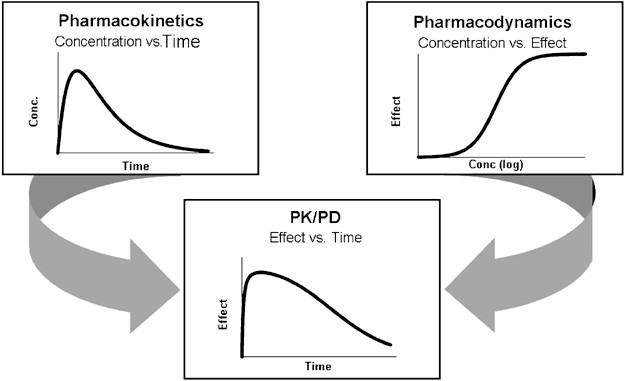
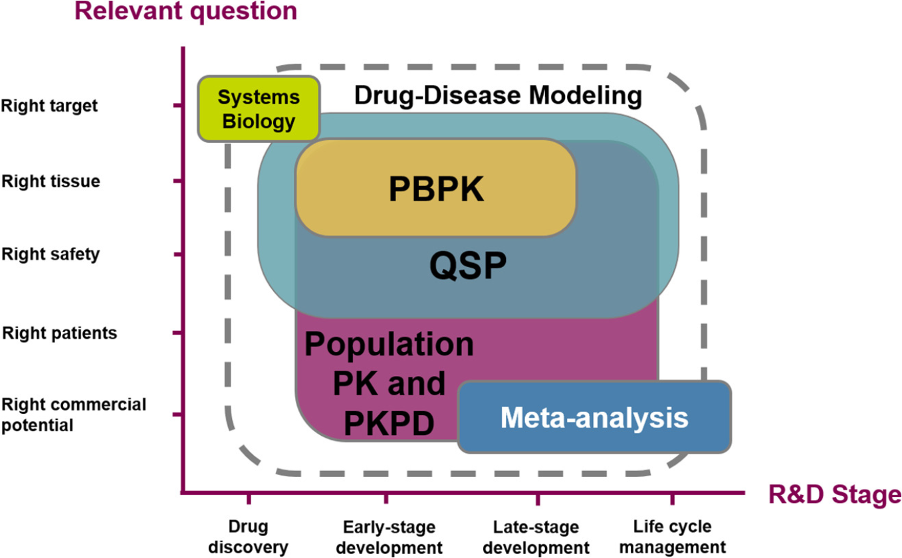
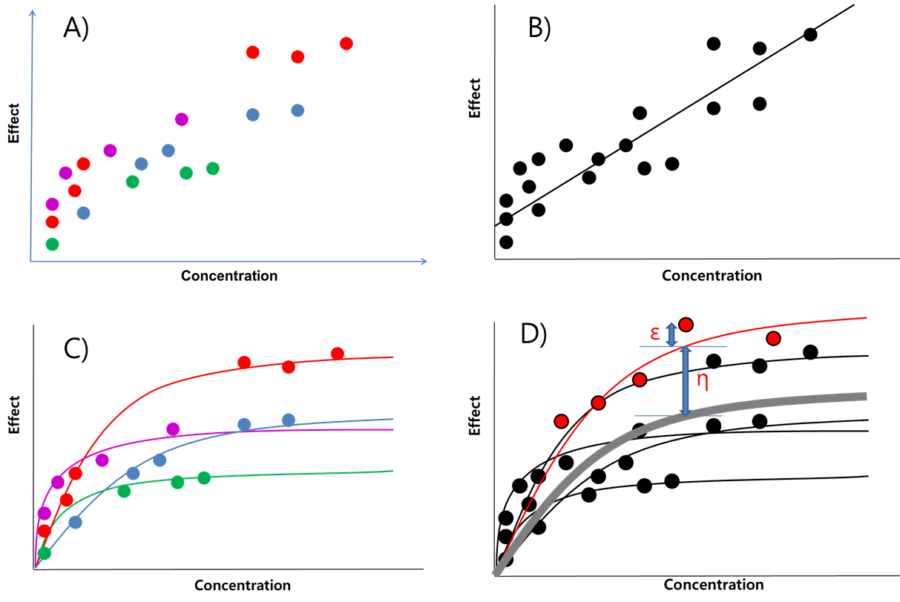
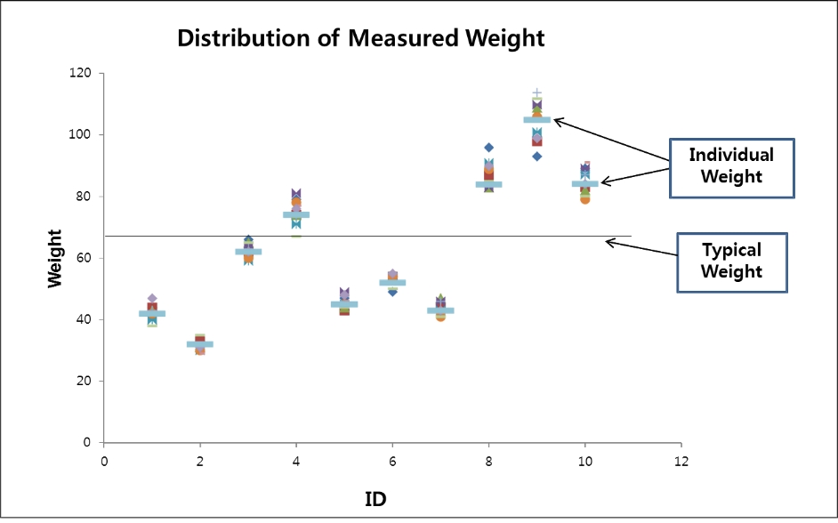

Chapter 1 계량약리학과 관련 개념들
Pharmacometrics and related concepts
임동석
1.1 소개 Introduction
이 교재는 약동-약력학 모델링을 위해 가장 널리 사용하는 NONMEM 소프트웨어를 활용하기 위에 알아야 하는 기본개념들과 그 사용법을 소개하기 위하여 만들어졌다. NONMEM을 배워 쓰고자 하는 이유는 자신이 가진 약동학(pharmacokinetic, PK)이나 약력학(pharmacodynamics, PD) 데이터를 모델링하기 위해서이다. 이 분야에 익숙지 않은 독자라면 PK/PD 모델링, 계량약리학(pharmacometrics), 생리학에 근거한 약동학(physiologically-based pharmacokinetics, PBPK), 시스템 약리학 등 유사한는 용어들의 개념부터 정리해 볼 필요가 있다.
PK-PD 모델링은 무엇인가?

그림 1. PK-PD 모델링의 개념 [1]
그림 1은 PK-PD 모델링의 개념을 가장 잘 보여주는 그림이다. 약을 개발하는 초기단계부터 개발자가 알고 싶어하는 것은 신약 몇 mg을 얼마의 간격으로 주면 가장 적절한 효과를 얻을 수 있을까, 얼마까지 안전할까 하는 질문들일 것이다. 이에 답하기 위해서는 환자에서 임상시험을 통해 그림 1의 맨 아래 패널과 같은 곡선을 구하면 되겠지만, 환자에서 약효를 투약간격 동안 이렇게 여러 번 실시간으로 측정하는 것은 거의 불가능하다. 대신 쉽게 얻을 수 있는, 시간에 따른 사람에서의 PK 변화(위 왼쪽)와 시험관내 연구 등을 통해 얻어진 약물농도와 PD(약효 대신 추정할 수 있는 각종 생체표지자들)의 관계를 정량적 모델로 파악하면 환자에서 직접 관찰하지 못할지라도 아래쪽 패널과 같이 용량용법(dosage regimen)에 따른 약효나 부작용의 추이의 곡선을 예측할 수 있고, 이를 비임상, 임상시험의 설계나 시판용량 결정 등에 적용할 수 있게 된다. 그리고 그림1의 위 두 패널의 곡선들끼리의 관계를 수학적 모델로 만들어 아래쪽 패널의 곡선을 예측하기 위한 일체의 연구를 하는 연구활동을 포괄적으로 PK/PD 모델링이라고 부른다.
그런데 실제상황에서 어떤 약의 임상시험이나 시판을 위한 용량용법을 결정하고자 할 때, 환자들에서의 PK와 PD와의 관계는 그림1에서처럼 매끈한 하나의 곡선끼리의 조합으로 정의할 수는 없게 된다. 단 한 사람의 환자라면 이것이 가능할지 모르나 다수의 환자 데이터에 대해 적용하기 위해서는 전체 환자들을 대표하는 곡선들과 그 신뢰구간들을 포함하는 좀 더 복잡한 모델을 만들어야 될 것이다(그림 2). 이런 모델을 이용해서 약효나 부작용을 예측한다면 단순히 ‘얼마를 주면 효과가 있다’ 보다는, 이를테면 ‘특정 환자집단에게 이 약을 매일 100 mg씩 주면 환자들의 90%는 최대약효의 80% 이상을 나타내고, 95%는 70% 이상을 나타내고, 또 그 중 10%는 grade 1의 부작용을 경험할 것이다.’와 같은 좀 더 정교하게 예측하는 방식이 될 것이다. PK/PD 모델링 중에서도 이렇게 인구 집단을 대상으로 하여 통계학적 기법을 적극적으로 쓰는 연구방식을 population PK/PD 모델링 (집단 약동/약력학 모델링)이라고 구분하여 부른다. 집단약동/약력 모델링은 혼합효과 모델링(mixed-effects modeling)이라는 방법론을 쓰고 있으며 이 방법을 적용하여 모델을 만들고 파라미터들을 찾아내는 소프트웨어가 몇 종이 있는데, 전세계적으로 가장 일찍 개발되어 널리 쓰이는 것이 NONMEM이다.
그림 2 집단(population)의 분포값들을 고려한 PK-PD 모델링의 개념 PBPK는 동물에서 얻어진 약동학 자료와 in vitro 연구자료를 바탕으로 사람에서의 약동학이나 약물-약물 상호작용 등을 종간의 생리학적 수치 차이를 적용하여 추정하는 연구방법이다. 집단 모 델링 방법에는 종간의 생리학적 차이 등이 거의 고려되지 않았지만 PBPK는 이처럼 실험실에서의 시험관내 실험, 동물실험 연구 자료들을 바탕으로 사람의 약동학을 추정하므로 상향식(bottomup) 방식의 접근이라 할 수 있다. 오늘날은 PBPK와 집단 약동/약력학 모델링을 모두 계량약리학 이라는 학문분야에 포함된다고 보고 있다. 시스템약리학(systems pharmacology, quantitative systems pharmacology)은 시스템생물학 의 개념을 신약의 개발에 적용하고자 하는 시도로서 약에 의해 세포 수준에서 일어나는 바이오마 커들의 변화를 측정하여 작용기전과 용량-효과 관계를 좀 더 일찍, 더 깊이 이해하기 위한 학문이 다. PBPK의 개념을 조직이나 장기 수준에서 세포 이하의 단위까지 확장한 것이라고도 볼 수 있으 며 세포 내에서 각종 바이오마커들을 측정하는 것의 기술적 어려움 등으로 인해 PK/PD 모델링에 도입되기 시작하는 단계이다. 이러한 방법론들의 관계는 그림 3에 요약되어 있다.

그림 3. PK-PD 모델링의 각종 개념들의 연관성 [2]
1.2 혼합효과 모델링 Mixed-effects modeling
집단약동학 모델링을 배우기 위해 알아야 하는 가장 기본적인 개념이 혼합효과의 개념이다. 그 리고 이 개념을 쉽게 설명한 교재가 드물므로 학습자 스스로가 많은 노력과 시간을 쏟아야 한다. 설명을 위해 그림 4를 보자.
1.2.1 집단의 데이터를 처리하는 세가지 방법
 그림 4 집단의 데이터를 처리하는 세가지 방법 A) 각자에서 얻어진 데이터, B) naive pooled method, C) two-stage method, D) mixed-effects method
그림 4의 A를 보면 환자별로 다른 색으로 표시된 혈장약물농도와 약효의 관찰값들이 나타나 있 다. 이 데이터를 처리하는 방법은 아래와 같이 세가지가 있다.
1.2.1.1 Naive pooled method
가장 단순한 방법으로그림 4의 B)와 같이 각 관찰값들이 어떤 사람으로부터 온 것인지에 무관 하게 모두 뭉뚱그려서 약물농도와 효과와의 관계를 본 것이다. 위 사례의 경우 그 관계는 선형적 인 것으로 나타나는데, 가장 간단하고 편해 보이는 분석방법이지만 실제 각 환자에서의 농도-효과 관계 (포화되는 곡선 형태)를 왜곡하는 결과를 나타내므로 권장되지 않는 방법이다.
1.2.1.2 Two-stage method
이 방법은 그림 4의 C)와 같이 각 환자 별 농도-효과 관계의 형태를 나타내는 파라미터 값 (Emax, EC50 등)을 구하고 여러 환자에서 얻은 값들의 평균과 표준편차를 구하여 전체 환자들에 서의 농도-효과 관계를 구하는 것이다. Naive pooled method 에 비해 훨씬 나은 집단 데이터 처 리 방법이겠지만 한가지 문제는 환자 한 사람마다 파라미터 값을 구할 수 있을 정도로 충분히 많 은 수의 관찰값이 얻어져야 한다는 점이고, 이렇게 충분한 관찰값을 얻을 수 있는 연구는 소수의 대상자를 모집하여 수행하는 초기 임상시험을 제외하고는 드물다는 것이다.
1.2.1.3 Mixed-effects method
소수의 대상자를 모집하여 모든 환자 개개인에서 충분한 수의 약동/약력 데이터를 확보할 수 있는 경우는 드물다. 다수의 환자를 대상으로 수행하는 임상연구에서 얻을 수 있는 데이터의 가장 흔한 양상은, 비록 그 중 일부 환자에서는 충분한 데이터를 얻는다 해도, 나머지 대부분의 환자들 에서는 일인당 몇 개 이하의 데이터밖에 없어서 two-stage 방법으로는 처리할 수 없는 상황이다. 그러나 naive pooled 방법은 용량-농도-약효 등의 관계의 왜곡된 해석의 위험 때문에 이를 쓰는 것도 바람직하지 않다. 이처럼 환자 집단에서 얻어진 약동/약력학 데이터를 처리할 때, 환자 개개 인의 파라미터를 자신 있게 구할 수 있을 만큼 충분한 자료를 얻지 못하였다 해도 시도할 수 있는 방법이 혼합효과(mixed-effects) 방법이다. 그림 4의 D)에 그 개념을 표현하고 있다. 환자에서 얻 어진 관찰값들은 인구집단 전체의 평균값 (굵은 실선)에서 각 사람마다의 개인간 차(η: 그리스 문 자의 ‘에타’의 소문자, 알파벳 n이 아님)로 인해 환자마다 제각기 하나의 실선으로 예측값의 개인 별 양상을 나타낸다. 그러나 동일한 환자에서도 매번 관찰 시마다 자신의 예측값인 실선 위에 정 확히 겹쳐지기 보다는 조금씩 떨어져 있게 되는데 그 원인에는 여러 가지가 섞여 있지만, 일단 개 인간의 차이로는 설명이 안되는 차이이므로 잔차(잔류오차, residual error)로 표현하며 그리스 문 자 ‘엡실런’의 소문자인 ε를 써서 나타낸다. 패널 D)에서는 붉은색 실선으로 한 환자의 예를 들어 η 와 ε을 나타내었지만, 사실은 각 환자마다 집단의 평균치와 떨어져 있는 정도가 다르므로 η는 환자 한 사람마다 제각기 다른 값을 가질 것이고, 반면에 잔차인 ε은 매 관찰값마다 다를 것이다. 주어진 집단에서의 데이터들을 가장 잘 설명할 수 있는 모델 (예컨데 Emax 모델을 쓸지 선형 모델을 쓸지)을 찾아내고, 그 모델에 대한 집단의 파라미터의 평균값과 개인간 차, 잔차의 분산의 조합들을 적절한 알고리즘을 써서 평가하여 가장 그럴듯한 값들을 구하는 것이 혼합효과 모델링 이다.
1.2.2 혼합효과 모델링의 개념
1.2.2.1 체중 측정의 사례를 통한 설명
그림 4에서 설명한 혼합효과 모델링의 간략한 개념을 좀 더 쉽게 설명할 수 있는 사례를 Fisher 와 Shafer의 NONMEM 워크샵 교재에서 인용하여 설명하고자 한다. 그림 5와 같이 모두 10명의 사람이 있고, 각자 하나씩의 저울을 배정받아서 체중을 일정 시간 간 격으로 열 번씩 측정하였다고 가정해 보자. ID 1번의 체중은 44,44,43, … 등과 같이 측정되었는데 그 평균은 40kg이고, 나머지 사람들도 이렇게 10번씩 측정하여 결국 10명에서 10번의 측정 = 총 100개의 체중 데이터가 있다. 저울들의 품질이 좋지 않아서 매번 체중을 측정할 때마다 조금씩 측 정값이 달리 나올 수 있다고 가정하자. 혼합효과 모델링을 이해하기 위해서는 기본적인 용어들인 고정효과(fixed effect, θ), 개인간 변이(interindividual variability, η), 잔차 또는 개인내 변이(residual error or intraindividual variability, ε) 등의 용어를 이해하여야 한다. 체중 측정의 사례를 들어 쉽게 설명한다면 전체 집단 (10 명)을 대표하는 체중을 70kg라고 하면 그 70kg이 θ가 된다. 그 다음 이 대표값과 각 개인에서 의 평균값(10번 측정한 것의 평균)과의 차이가 개인간 변이(η)가 될 것이다. 이를테면 ID가 1인 사 람의 평균체중은 42 kg이고 그의 η는 -38 kg일 것이다. 나머지 아홉 명 각자의 평균체중값 9개도 그림에서 보듯 역시 전체 집단의 평균체중 (θ=70 kg)을 중심으로 그 위, 아래에 분포해 있다. 이것 을 일인당 하나씩 구해지는 η값들의 분포로 바꾸어 설명한다면, η값들은 0을 중심으로 0보다 크 거나 작은 값들로 퍼져 있을 것이므로, 혼합효과 모델링에서는 그 분포를 평균값 0, 분산 ω2인 정 규분포라고 가정하기로 했다. 그런데 ID 1의 체중의 평균은 42 kg였지만 매번 측정 시마다 조금씩 체중이 다르게 나오는 것은 무엇으로 설명할 수 있겠는가? 원인은 다양할 것이다. 저울의 품질이 나쁘기 때문일 수도 있고, 측 정하는 사이에 사람의 활동(식사, 배변 등)으로 인해 진짜 체중이 변했을 수도 있고, 아날로그 저 울이었다면 기록하는 사람에 의한 반올림 오차 등도 있을 것이다. 이러한 모든 원인들로 인한 개 인 평균값과 매 측정 시 얻어진 값의 차이를 잔차(ε)라고 한다. 한가지 당연한 사실은 ID 1의 10번 측정한 체중 값들은 그의 평균인 42 kg을 중심으로 위 아래로 분포해 있다는 것이다. 이는 나머지 ID 2-10에 이르는 사람들에서도 마찬가지이다. 또한 각 관찰값마다 하나씩의 잔차 ε이 존재하며, 각 사람 별로 0을 중심으로 0보다 크거나 작은 10개의 ε들이 존재할 것이다. 이를 전체 열명 모두 에서 합쳐서 하나의 분포라 생각해 본다면 0을 중심으로 0보다 크거나 작은 100개의 ε들이 존재 할 것이고, 역시 평균 0이고 분산 σ2을 따르는 정규분포를 따른다고 가정하기로 했다. 이를 수식으 로는 아래와 같이 표기한다. 개인간차와 잔차의 분산들을 각기 ω2과 σ2으로 이름 붙인 것은 혼합효과 모델링에서 쓰기로 정 한 하나의 약속이다. 물론 더 깊이 생각해 본다면 이 열 사람 중에서 품질이 더 심하게 나쁜 저울 에 올라선 어떤 이의 체중은 매 측정 시마다 차이가 좀 더 심하게 날 수도 있어서 다른 사람들보다 더 큰 σ2을 쓰는 것이 적절할 수도 있다. 그러나 일반적으로 혼합효과 모델링의 기본 가정은 전체 인구집단에서 σ2은 개인별로 차이가 없다고 가정한다.

그림 5
1.2.2.2 약동학 자료로 본 혼합효과 모델링의 개념
1차식을 따라 주로 신장으로 배설되는 약물의 경우, 사람에서 측정된 혈장 약물농도를 혼합효 과 모델로 분석하는 개념이 아래 그림 6에 잘 나타나 있다. 앞서 저울의 예는 따로 파라미터라고 할 것이 없지만 어떤 시점에서의 약물 농도를 결정하는 것은 약의 용량, 투여 후 경과시간, 그리고 사람의 몸이 약을 다루는 두 개의 파라미터들인 분포용적(Vd)과 청소율(CL)이다. 그림 5의 사례 에서 쓰인 약물은 CL의 경우 GFR과 같은 공변량의 함수로(그림 6에서는 선형적으로 비례) 예측 할 수 있으나, 실제 어떤 환자 i에서의 CL은 그의 GFR로 예측한 값보다 더 컸고 이는 그 환자에서 의 CL의 개인간차(η_CLi_)가 양의 값을 가진 것으로 설명한다(그림 6의 왼쪽부분). Vd 역시 그의 체 중이라는 공변량으로 예측하지만 그의 실제 Vd와는 ηVdi 만큼의 차이가 있다. 그림의 오른쪽 아 래를 보면 환자 i와 똑 같은 GFR과 체중을 가지는 모든 환자들에서 혈장약물농도 곡선이 위쪽 곡 선과 같다고 예측될 것이다. 그런데 실제 환자 i의 CL과 Vd는 그러한 예측과는 조금씩 달랐으므 로 개인간차를 반영한 그의 CL과 Vd(CLi과 Vdi)로 예측한 농도가 아래쪽 곡선이다. 그것으로 모 든 것이 끝날 것 같지만, 환자 i에서 tij라는 특정 시간에 측정된 실제 농도(흰 네모)는 개인별 파라 미터로 예측한 농도 (검은 동그라미)와 또 차이가 난다. 그 차이의 원인은 가정한 1차식(선형약동 학)을 따라 제거된다는 PK모델 자체가 실제 이 약의 농도변화를 정확히 반영하지 못해서(model error)일 수도 있고, 농도측정 방법의 정확도/정밀도의 문제일 수도 있으며, PK를 관찰한 기간 동 안에 개일리듬에 의해 환자의 파라미터가 바뀌어서일 수도 있는 등 다양하다. 원인을 한가지로 특 정할 수 없지만, 까만 원과 흰 네모 사이의 거리는 파라미터의 개인간차로 설명이 안되는 부분이 라서 잔차(ε)라고 하며, 실제 모든 사람에서 각 측정치마다 따라다니는 값이므로 각기 다른 사람 임을 나타내는 i와 측정횟수를 의미하는 j를 아래첨자로 함께 붙여서 εij로 표기하게 된다. 마찬가 지로 Vd 나 CL의 개인간차는 한 사람에서 하나만 존재하므로 ηVdi, ηCLi와 같이 표기한다.
FIGURE 1.1: 혼합효과 모델링의 개념도. NONMEM 매뉴얼(Beal 2018)의 그림에 수식을 추가한 것
1.3 참고문헌
- Pharmaceutical Research February 1999, Volume 16, Issue 2, pp 176–185 Modeling of Pharmacokinetic/ Pharmacodynamic (PK/PD) Relationships: Concepts and Perspectives Hartmut DerendorfEmail authorBernd Meibohm
- European Journal of Pharmaceutical Sciences Volume 109, Supplement, 15 November 2017, Pages S39-S46 Drug-disease modeling in the pharmaceutical industry - where mechanistic systems pharmacology and statistical pharmacometrics meet
- NONMEM Users Guide참고문헌 · NONMEM 데이터셋 15
References
Beal, Sheiner, S. L. 2018. NONMEM 7.4 Users Guides. 2nd ed. Gaithersburg, Maryland: ICON plc. https://nonmem.iconplc.com/nonmem743/guides.